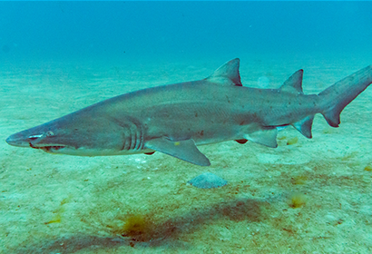
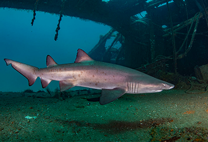
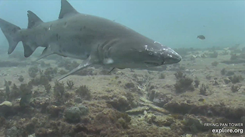

ADOPT A SAND TIGER SHARK
When you adopt a sand tiger shark in the Spot A Shark USA database, you are supporting research conducted by the North Carolina Aquariums to further the conservation of sand tiger sharks world-wide. You will give your adopted shark a nickname and will recieve email updates when the shark is sighted again by other citizen divers like you!
Thank you for participating in Spot A Shark USA!
Learn about the sharks....

Cecil

Claud

Maylon

Ginger Bear

Tippy

Rip Torn